Releasenotes eBlinqx Hypotheekadvies – September 2025
Onderstaande updates hebben wij in de maand september doorgevoerd: 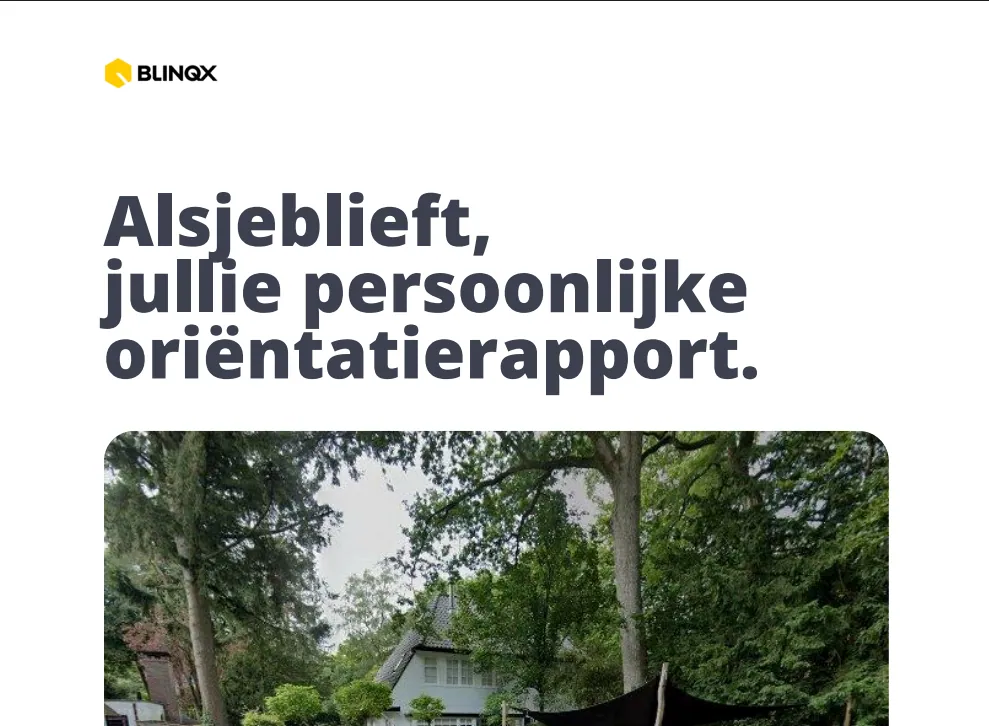
📑 IT-27963: Aanbiedernamen verwijderd uit Oriëntatierapport
In het Oriëntatierapport worden aanbiedernamen nergens meer getoond. Dit geldt o.a. voor: Hypotheekconstructie, Arbeidsongeschiktheid, Werkloosheid en Overlijden.
In het Adviesrapport blijven de aanbiedernamen uiteraard wél gewoon zichtbaar, zodat je daar je klant concreet kunt informeren. Zo heb je nu heldere en neutrale Oriëntatierapporten, precies zoals het hoort in deze fase van het adviesproces.
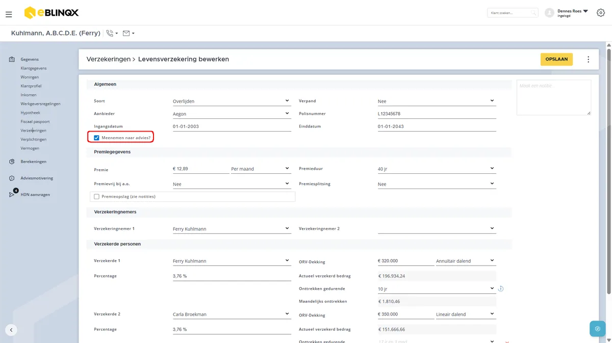
✅ IT-27433: Checkbox ‘Meenemen naar advies’ altijd zichtbaar bij ORV
We hebben een verbetering doorgevoerd bij het invoeren van een bestaande overlijdensrisicoverzekering (ORV). Tot nu toe kon het voorkomen dat de checkbox ‘Meenemen naar advies’ ontbrak, waardoor je niet expliciet kon vastleggen of de ORV in de nieuwe adviessituatie moest worden meegenomen. Wat is er verbeterd?
-
De checkbox is nu altijd zichtbaar, ongeacht de herkomst van de polis.
-
Jij bepaalt dus altijd zelf of de bestaande ORV wel of niet onderdeel uitmaakt van het advies.
-
Dit zorgt voor een complete en transparante vastlegging, helemaal in lijn met de AFM- en interne vereisten.
👉 Zo houd jij de regie en weet je zeker dat je advies volledig en correct wordt vastgelegd.
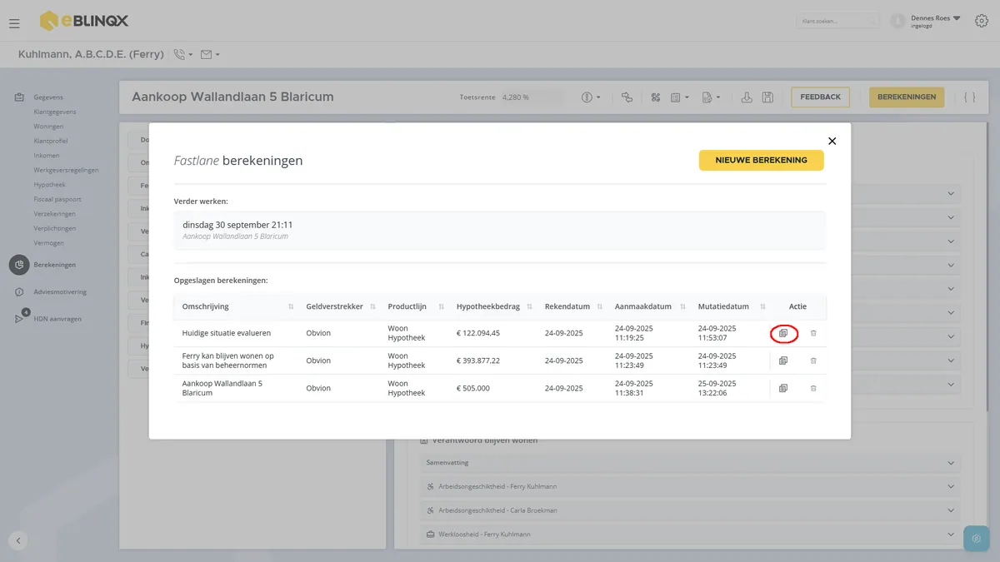
📑 IT-27960: Snel een kopie maken van je berekening
Je kunt vanaf nu heel eenvoudig een bestaande berekening kopiëren via Berekeningen inladen. Wat levert dit je op?
-
Je hoeft geen berekening meer helemaal opnieuw op te bouwen.
-
Met één klik maak je een kopie en kun je direct varianten uitwerken.
-
Handig wanneer je meerdere scenario’s naast elkaar wilt leggen voor je klant.
👉 Zo werk je sneller, flexibeler en heb je altijd direct vergelijkingsmateriaal bij de hand.
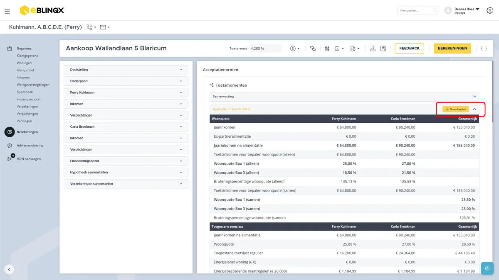
📄 IT-19096: Acceptatie- en beheernormen nu beschikbaar als losse download
Op verzoek van veel kantoren hebben we een handige uitbreiding toegevoegd: je kunt de Acceptatie- en Beheernormen op rekendatum nu als los document downloaden. Wat betekent dit voor jou?
-
Je kunt de normen eenvoudig apart opslaan of delen.
-
Dit maakt het nog makkelijker om de financiële onderbouwing van je aanvraag mee te sturen naar de geldverstrekker.
-
Je wint tijd en hebt altijd een overzichtelijk document bij de hand.
👉 Zo wordt het onderbouwen van je advies richting geldverstrekkers nog eenvoudiger en professioneler.
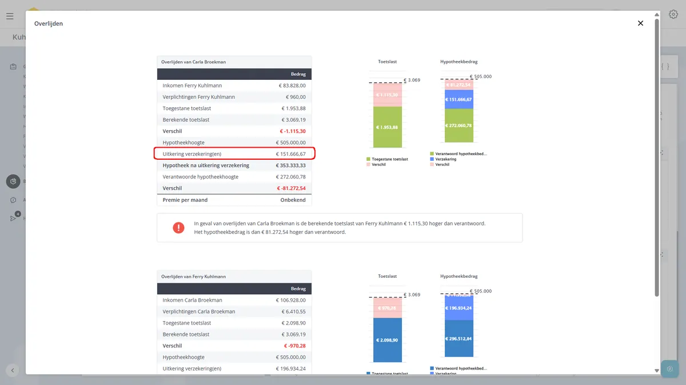
⚖️ IT-27971: Bestaande ORV nu correct meegenomen bij advies volgens de GHF-methodiek
Goed nieuws: bij advisering op basis van de Gedragscode Hypothecaire Financieringen (GHF) wordt een bestaande overlijdensrisicoverzekering (ORV) van een alleenstaande klant nu altijd correct meegenomen in je advies. Tot nu toe werd een bestaande ORV, ongeacht of deze wel of niet verpand was, niet zichtbaar verwerkt in het advies. Dit kon leiden tot een onvolledig beeld in je rapportage. Wat is er verbeterd?
-
De bestaande ORV wordt nu altijd meegenomen zodra jij dit in het dossier selecteert.
-
Dit geldt zowel voor verpande als niet-verpande polissen.
-
De berekeningen en weergave sluiten volledig aan bij de instellingen in het dossier.
👉 Daarmee heb jij altijd een volledig en betrouwbaar advies, precies zoals je klant mag verwachten.
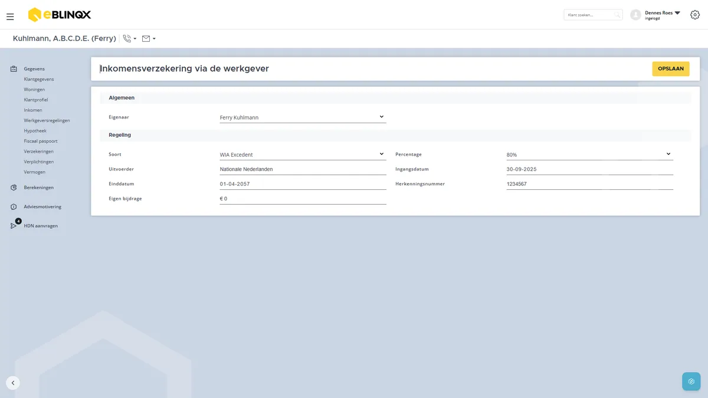
🧮 IT-27984: Correcte berekening bij WIA Excedentverzekering
We hebben een belangrijke verbetering doorgevoerd in de berekening van de WIA Excedentverzekering. Tot nu toe kon het gebeuren dat eBlinqx Hypotheekadvies óók een uitkering berekende wanneer het jaarsalaris van je klant lager lag dan het maximale WIA-jaarloon (in 2025: € 75.864). Hierdoor werd het resterend inkomen soms onterecht twee keer aangevuld en kreeg je klant een te rooskleurig beeld van zijn of haar financiële situatie bij arbeidsongeschiktheid. Wat is er verbeterd?
-
eBlinqx Hypotheekadvies controleert nu eerst of het jaarsalaris boven het maximale WIA-jaarloon uitkomt.
-
Alleen dán wordt er een excedentuitkering berekend.
-
Bij een jaarsalaris onder dit maximum wordt er geen onterechte uitkering meer toegevoegd.
👉 Daarmee weet jij zeker dat je berekening klopt en dat je klant een realistisch beeld krijgt van het financiële vangnet bij arbeidsongeschiktheid.
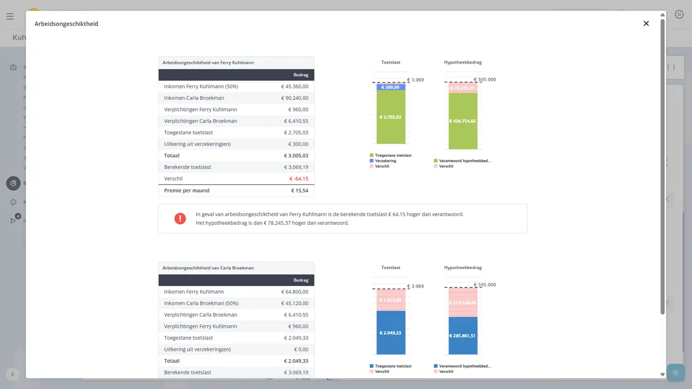
🛡️IT-27494: WGA Uitgebreid Inkomensverzekering nu zichtbaar bij ‘Verantwoord blijven wonen’
We hebben een belangrijk detail verbeterd in de weergave van inkomensverzekeringen. Tot nu toe werd de WGA Uitgebreid Inkomensverzekering wel meegerekend in de berekening en in de sidebar, maar niet getoond in het verdiepende scherm bij Arbeidsongeschiktheid → Verantwoord blijven wonen. Daardoor was het overzicht voor jou en je klant niet compleet. Wat is er verbeterd?
-
De WGA Uitgebreid Inkomensverzekering wordt nu ook netjes weergegeven in het verdiepende scherm.
-
Je krijgt zo altijd een volledig beeld van de financiële situatie bij arbeidsongeschiktheid.
-
Dit maakt je advies betrouwbaarder en transparanter richting je klant.
👉 Kortom: jouw berekening en je verdiepende scherm zijn nu weer helemaal in lijn met elkaar.
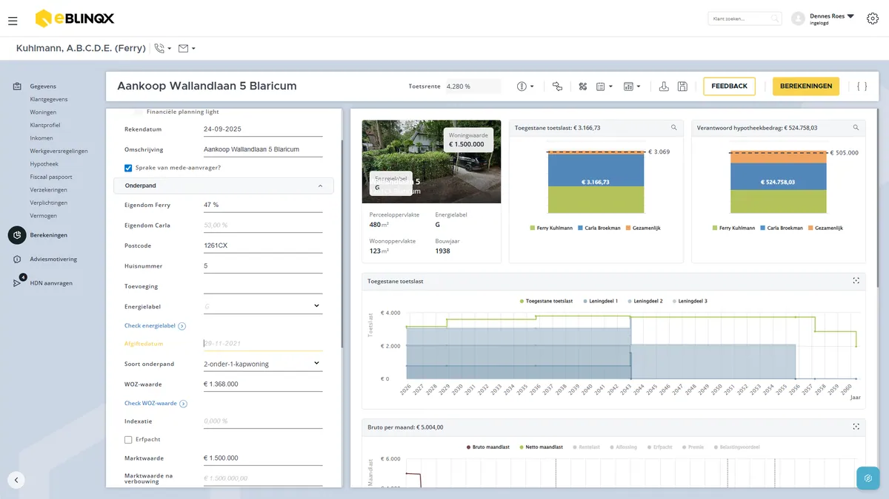
⌨️ IT-27400: Soepeler navigeren met de TAB-toets in de financieringsopzet
Werk je op een Apple-computer? Dan heb je misschien gemerkt dat de TAB-toets niet altijd deed wat je verwachtte in de financieringsopzet. De cursor sprong namelijk eerst naar het euroteken en pas daarna naar het invoerveld. Dat maakte het aanpassen van bedragen wat omslachtig. Wat is er verbeterd?
-
De TAB-toets zet je nu direct in het invoerveld.
-
Je kunt daardoor vloeiender door de velden heen navigeren.
-
Het invoeren of aanpassen van bedragen gaat een stuk sneller en prettiger.
👉 Zo werk je met minder klikken en meer gemak door je financieringsopzet heen.
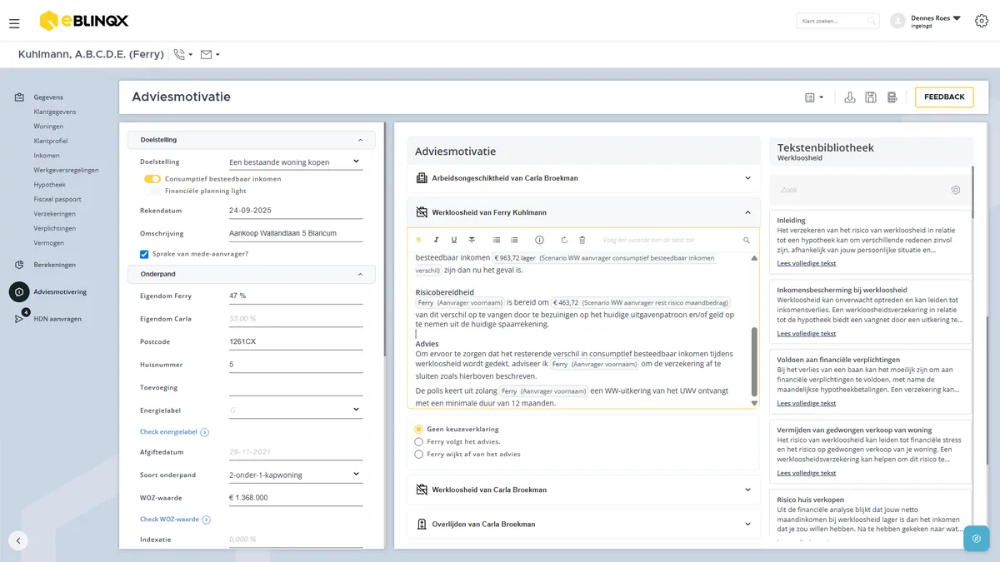
✂️ IT-27970: Geen dubbele tekst meer bij Werkloosheid in de adviesmotivering
We hebben de adviesmotivering bij het onderdeel Werkloosheid een stuk duidelijker gemaakt. Wat is er verbeterd?: De tekst komt nu alleen nog maar terecht waar hij hoort: bij het onderdeel Advies. Bij Risicobereidheid zie je voortaan alleen de teksten die daar thuishoren. Je adviesmotivering oogt hierdoor strakker en professioneler. Kortom: je rapportages zijn nu overzichtelijker, met alleen de juiste teksten op de juiste plek.
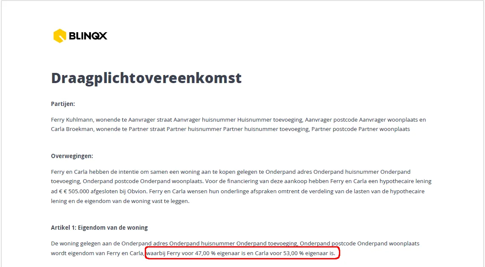
✅ IT-27929: Verbetering eigendomsverhouding in dynamische velden
Vanaf nu worden de dynamische velden in je teksten altijd gevuld met de juiste eigendomsverhouding. Tot nu toe pakten deze velden soms onterecht de eigendomsverhouding van een bestaande woning van de klant. Dit kon zorgen voor verwarring in je rapportages. Wat is er veranderd?
-
De dynamische velden sluiten nu direct aan op wat je in de sidebar hebt ingevuld.
-
Dat kan de standaard 50% / 50% zijn óf de percentages die je zelf handmatig aanpast.
-
Je teksten zijn hierdoor altijd in lijn met de actuele eigendomsverhouding die jij met je klant hebt besproken.
👉 Daarmee bespaar je tijd en weet je zeker dat je rapportage altijd klopt met de gekozen verdeling.
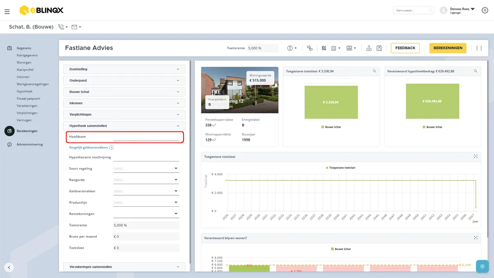
👉 IT-27974: Meer rust bij hypotheekvrije woningen
Heb je klanten met een eigen woning waar géén hypotheek meer op rust? Dan merk je meteen het verschil!
eBlinqx Hypotheekadvies blijft nu volledig rustig en stabiel, zodat jij zonder gedoe je advies kunt uitwerken. Kortom: meer overzicht, minder ruis en een soepel adviesproces.
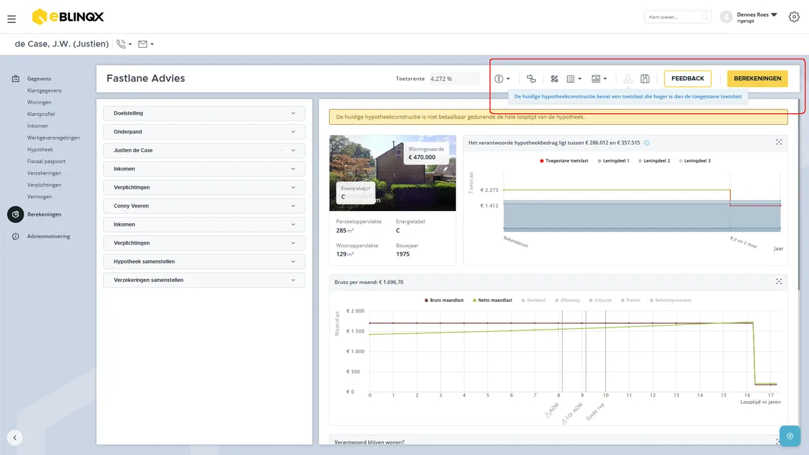
👉 IT-27903: Rapport downloaden bij 10-jaar-voor-AOW
Vanaf nu helpt eBlinqx Hypotheekadvies jou nog beter om te werken volgens de geldende toetsregels. Wanneer jouw klant binnen 10 jaar van de AOW-leeftijd zit én de hypotheekconstructie niet passend is, kun je het rapport niet downloaden. Op deze manier word je direct gewezen op de benodigde aanpassingen in de constructie, zodat je zeker weet dat het rapport altijd aansluit bij de toetsregels en je klant een correct en compleet advies ontvangt. Pas de constructie eenvoudig aan en zodra deze wél passend is, kun je het rapport direct downloaden zoals je gewend bent.
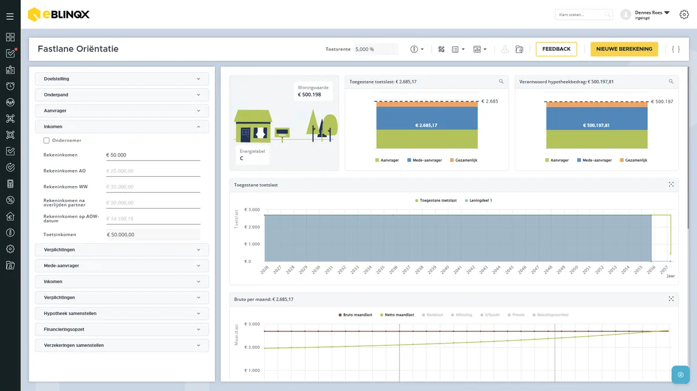
👉 IT-27877 – Maximale Hypotheekberekening
Met deze release is de Maximale Hypotheekberekening verder verbeterd. Je merkt dit onder andere in de standaardinstellingen, de presentatie in de software en de rapportage.
Wat is er nieuw of aangepast?
- Bij het openen van Fastlane Oriëntatie start je nu direct in de doelstelling Maximale hypotheek berekenen (bestaande woning).
- Bestaande bouw krijgt standaard energielabel C.
- Nieuwbouw krijgt standaard energielabel A+++
- In de output zie je onder de titel Maximale hypotheek berekenen nu een huis-icoon met 3 regels: Marktwaarde woning, WOZ-waarde en Energielabel
- Bij downloaden van een rapport staat standaard het sjabloon Oriëntatierapport klaar.
- Eigen geld van aanvrager en mede-aanvrager wordt automatisch berekend en samengevoegd.
- Het totale premiebedrag wordt automatisch meegenomen in zowel de bruto- als de netto woonlasten.
Wat betekent dit voor jou?
De berekening en rapportage sluiten nu beter aan op de praktijk: duidelijker energielabels, verbeterde presentatie én altijd het juiste rapporttype.
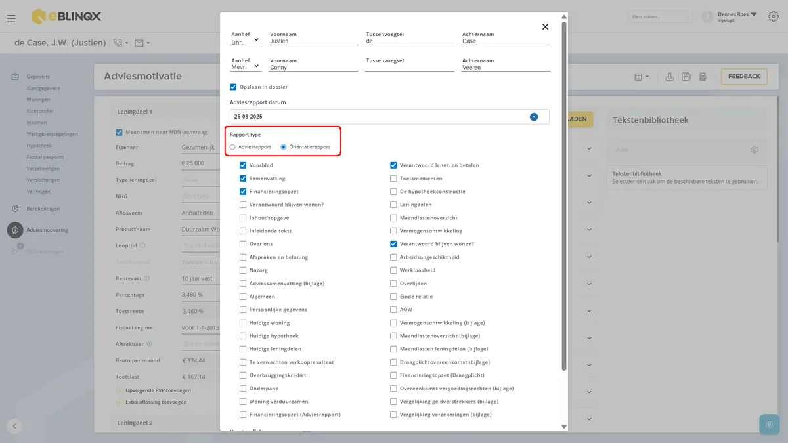
📄 IT-27923 – Nog makkelijker werken met het sjabloon Orientatierapport
Vanaf nu blijft het gekozen sjabloon Orientatierapport altijd behouden wanneer je een rapport downloadt in Fastlane Oriëntatie bij de doelstelling Maximale hypotheek berekenen. Je kunt dus met volle vrijheid onderdelen aan- of uitvinken, terwijl het sjabloon gewoon actief blijft. Wat betekent dit voor jou?
-
Je houdt altijd het sjabloon Orientatierapport in beeld.
-
Je kunt de inhoud flexibel samenstellen door vinkjes aan of uit te zetten.
-
Je werkt sneller en zonder onderbreking door.
Voordeel voor jou:
Meer gebruiksgemak én meer controle: jij bepaalt zelf eenvoudig welke onderdelen je meeneemt in je rapport, terwijl je sjabloon altijd hetzelfde blijft.
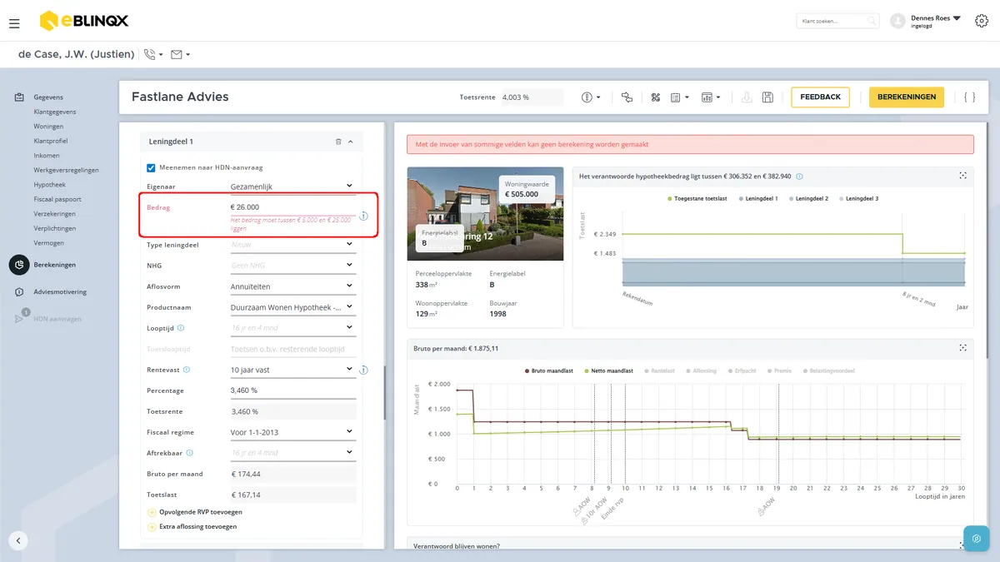
🌱 IT-27958 – Minimale en maximale bedragen voor groene leningdelen toegevoegd
eBlinqx Hypotheekadvies ondersteunt nu de minimale en maximale leenbedragen die gelden voor groene leningdelen bij verschillende geldverstrekkers. Hierdoor worden verduurzamingshypotheken beter gevalideerd en sluit de software naadloos aan op de actuele acceptatieregels van de aanbieders.
Wat betekent dit voor jou als adviseur?
-
✅ Bij het toevoegen van een groen leningdeel wordt automatisch gecontroleerd of het bedrag binnen de toegestane bandbreedte valt.
-
✅ Minder kans op foutmeldingen of afwijzingen bij het indienen van aanvragen.
-
✅ Altijd up-to-date met de actuele productvoorwaarden van de geldverstrekkers.
Voorbeelden van opgenomen regels:
-
ABN AMRO Duurzaam Wonen: minimaal € 5.000 – maximaal € 25.000
-
ASN Hypotheek: minimaal € 2.500 – maximaal € 30.000
-
Allianz Groen Hypotheek: maximaal € 35.000
-
Rabobank Groenhypotheek: maximaal € 150.000
-
a.s.r. Verduurzamingshypotheek: maximaal € 65.000
Wat hoef jij te doen?
Niets. eBlinqx Hypotheekadvies past de validatie automatisch toe bij het opstellen van de financieringsopzet.
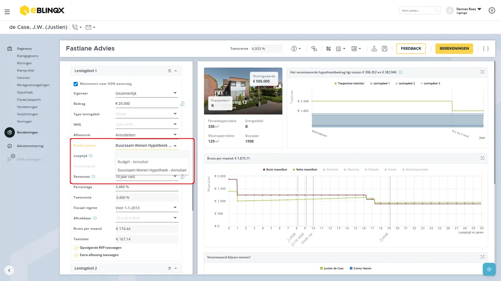
🚀 IT-27865 – Ondersteuning voor duurzame leningdelen uit Renteadmin
eBlinqx Hypotheekadvies is uitgebreid zodat duurzame leningdelen nu correct worden herkend en verwerkt. Dit betekent dat adviseurs bij het inlezen van rentestanden en leningdelen geen beperkingen meer ervaren en duurzame leningdelen probleemloos onderdeel uitmaken van de berekening en de output. Voordelen voor de adviseur:
-
✅ Volledige verwerking van duurzame leningdelen vanuit Renteadmin
-
✅ Minder kans op fouten of ontbrekende data in de financieringsopzet
-
✅ Naadloze integratie met bestaande berekeningen en rapportages
Wat hoef jij te doen?
Niets! Deze verbetering draait automatisch mee in de software.
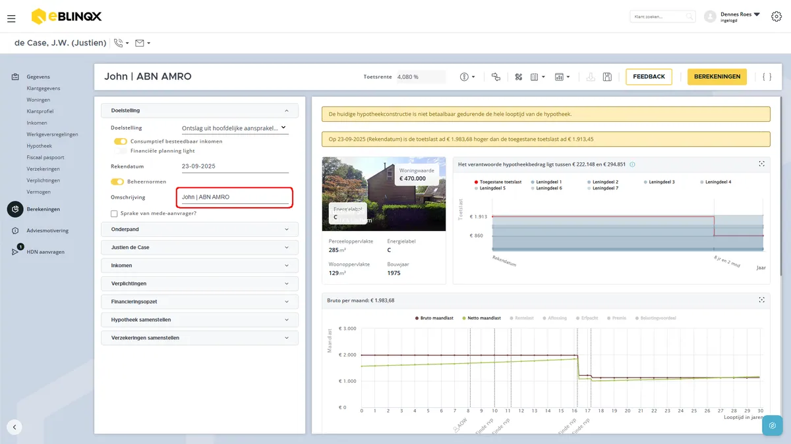
💡 IT-27840 – Namen opslaan mét symbolen
In de vernieuwde Save calculation-modal kon je tot nu toe geen namen gebruiken waarin symbolen stonden, zoals bijvoorbeeld “John | ABN AMRO”. Dat kwam doordat de validatie bepaalde tekens blokkeerde. We hebben dit aangepast: vanaf nu kun je weer alle gewenste namen gebruiken, inclusief symbolen. Zo kun je jouw berekeningen duidelijker labelen en makkelijker terugvinden.
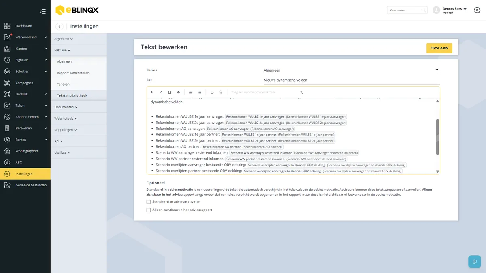
✨ IT-27803 – Nieuwe dynamische velden voor AO, WW en overlijden
Goed nieuws! Vanaf nu hoef je veel minder handmatig werk te doen bij het opnemen van scenario’s rond arbeidsongeschiktheid (AO), werkloosheid (WW) en overlijden in je adviesrapport. We hebben de ontbrekende dynamische velden toegevoegd aan de tekstenbibliotheek. Hierdoor worden alle relevante scenario’s automatisch gevuld en netjes opgenomen in je rapport. Dit scheelt tijd, voorkomt fouten en maakt je adviesrapport consistenter en professioneler. Je kunt nu gebruikmaken van de volgende dynamische velden:
-
Rekeninkomen WULBZ 1e jaar aanvrager
-
Rekeninkomen WULBZ 2e jaar aanvrager
-
Rekeninkomen AO aanvrager
-
Rekeninkomen WULBZ 1e jaar partner
-
Rekeninkomen WULBZ 2e jaar partner
-
Rekeninkomen AO partner
-
Scenario WW aanvrager resterend inkomen
-
Scenario WW partner resterend inkomen
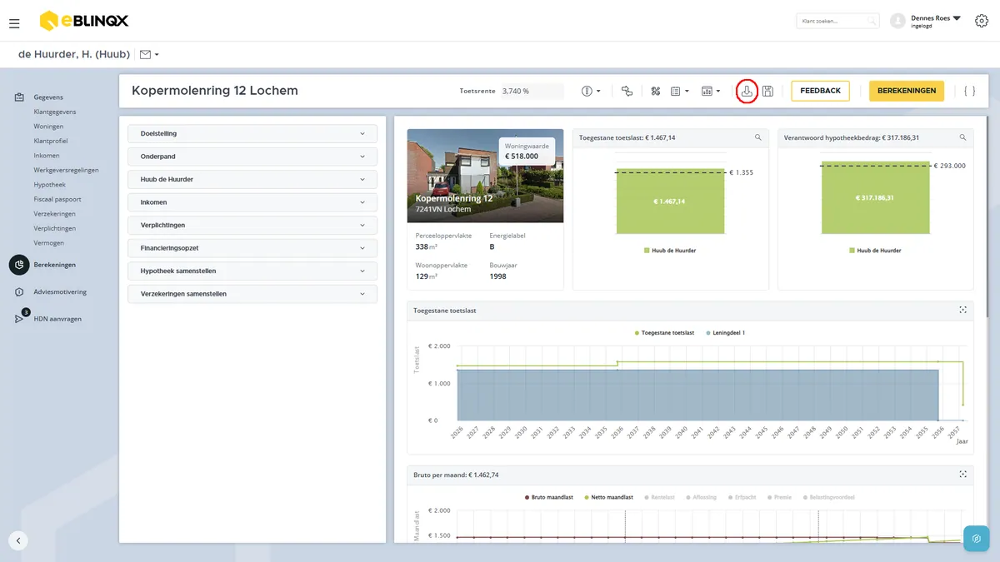
💡IT-27849 – Rapporten alleen afdrukken bij correcte berekening
Om je nog meer zekerheid te geven, kun je een rapport voortaan alleen afdrukken wanneer de berekening correct is uitgevoerd. Verschijnt er een rode balk met foutmeldingen? Dan wordt de downloadknop automatisch uitgegrijsd. Zo weet je zeker dat je alleen complete en juiste berekeningen met je klant deelt.
Dit voorkomt misverstanden en geeft je meer vertrouwen in de kwaliteit van je rapporten.
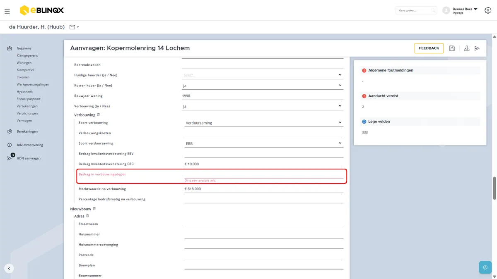
💡 IT-27534 – Slimmere verwerking van het verbouwingsdepot
Vanaf nu wordt het veld ‘Bedrag in verbouwingsdepot’ in het HDN-aanvraagformulier (AX) altijd correct gevuld. Wanneer jouw klant bij een reguliere verbouwing (dus niet verduurzaming) het bedrag níet in een bouwdepot wil plaatsen, wordt dit automatisch op de juiste manier verwerkt. Het veld is nu verplicht óf wordt – als je het leeglaat – automatisch gevuld met € 0,00. Het voordeel voor jou en je klant:
-
Geen onterechte plaatsing van verbouwingsbedragen in een bouwdepot.
-
Geen onnodige bewijslast met bonnen en facturen.
-
Minder administratieve lasten en een soepelere aanvraag.
Zo kun je de aanvraag sneller en zorgelozer afronden, terwijl je klant precies krijgt wat hij of zij wil.
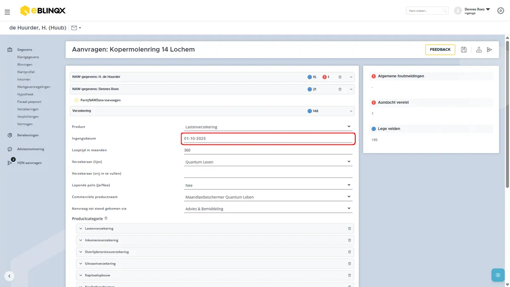
💡 IT-27490 – Ingangsdatum verzekering altijd synchroon met sidebar
Goed nieuws: de ingangsdatum van de verzekering in het HDN-formulier sluit nu altijd perfect aan op wat je in de sidebar bij Verzekeringen samenstellen hebt ingevoerd. Of het nu gaat om de automatisch geprefillde Rekendatum of een datum die je zelf hebt aangepast of bevestigd – deze wordt nu 1-op-1 overgenomen in het HDN-LX-aanvraagformulier. Zo werk je met nog meer zekerheid en consistentie: de gekozen ingangsdatum is altijd leidend en komt overal exact overeen.
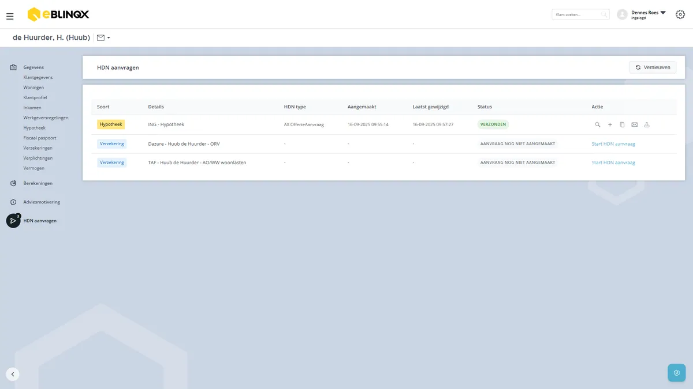
💡 IT-27756: Vernieuwde HDN-statuspagina: duidelijker en overzichtelijker!
Met deze release hebben we de HDN-statuspagina een mooie update gegeven. Je ziet nu een duidelijke vernieuwen-knop, zodat je altijd zeker weet of een aanvraag correct is verzonden – ook als je terug navigeert. Daarnaast hebben we een refactor van de code doorgevoerd, waardoor de pagina sneller en stabieler werkt. We onderzoeken bovendien extra verbeteringen rondom het redirecten naar de juiste berekening en het terugnavigeren na verzenden, zodat je straks nog soepeler door je workflow gaat. Kortom: je hebt meer controle, meer overzicht en een soepelere ervaring bij het werken met HDN-aanvragen!
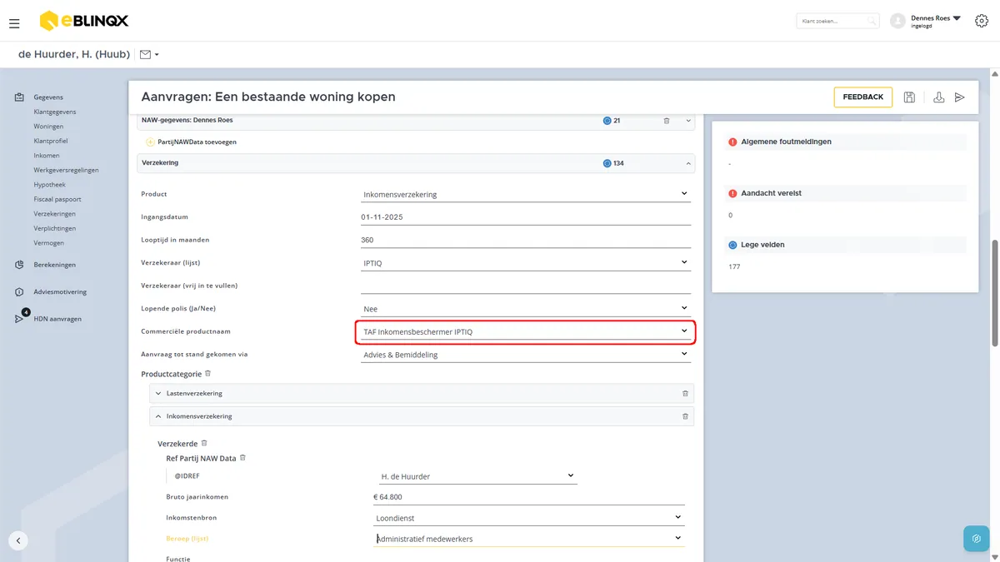
✅ IT-27493 – Correcte productnaam TAF Inkomensverzekering in HDN-LX
Vanaf nu wordt in het HDN-LX-aanvraagformulier de juiste commerciële productnaam voor de TAF Inkomensverzekering gebruikt. Voorheen werd onterecht de naam “Maandlastbeschermer IPTIQ” ingevuld. Dit is nu aangepast naar de correcte productnaam: “TAF Inkomensbeschermer IPTIQ”. Wanneer je een TAF Inkomensverzekering selecteert in je aanvraag, wordt voortaan automatisch de juiste productnaam doorgegeven. Dit voorkomt verwarring richting de aanbieder en maakt je aanvraag direct correct en compleet.
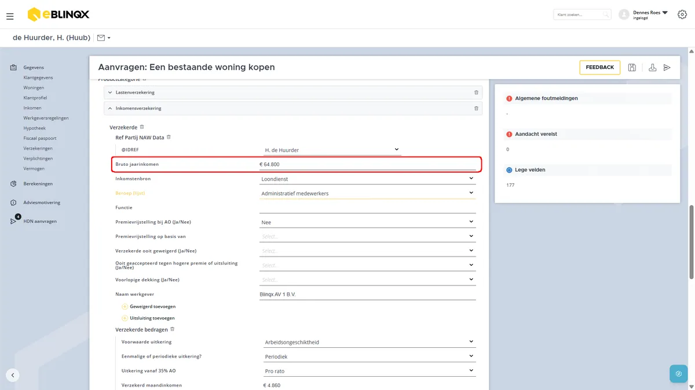
📝 IT-27390 – Bruto jaarinkomen automatisch ingevuld bij HDN-aanvraag Inkomensverzekering
Vanaf nu wordt het veld ‘Bruto jaarinkomen’ in het HDN-LX-aanvraagformulier voor een inkomensverzekering automatisch voor je ingevuld.
✅ Geen dubbel werk meer: het inkomen dat je al in eBlinqx Hypotheekadvies hebt vastgelegd, wordt direct meegenomen
✅ Minder kans op foutmeldingen of ontbrekende gegevens
✅ Sneller en efficiënter aanvragen van inkomensverzekeringen
Zo kun jij je aanvraag nóg sneller en foutloos afronden.
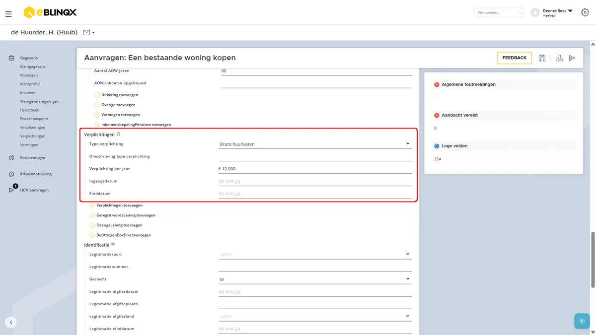
✅ IT-27250: Automatisch invullen bruto huurlasten bij huurwoning
Vanaf nu worden de bruto huurlasten automatisch geprefilld in het HDN-aanvraagformulier wanneer je klant in een huurwoning woont. Voorheen moest je dit veld zelf invullen. Als dit ontbrak, gaf het systeem een foutmelding zoals: “16391 – Het is verplicht om de verplichting 'Bruto Huurlasten' op te geven wanneer de HuidigeWoonsituatie een Huurwoning betreft. Deze foutmelding zorgde regelmatig voor verwarring. De jaarhuur wordt nu automatisch ingevuld bij de Verplichtingen in het HDN-formulier. Je ontvangt geen onnodige foutmeldingen meer en kunt je aanvraag sneller en foutloos indienen.
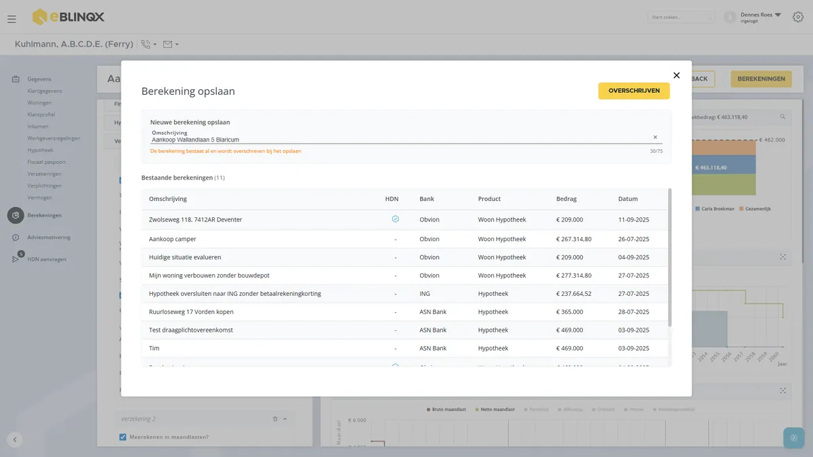
💡 IT-27806 – Consistente styling bij het opslaan van een berekening
Vanaf nu is het Save calculation-scherm in dezelfde stijl vormgegeven als het scherm dat je al kent bij het laden van een berekening. Dankzij deze update ziet alles er niet alleen strakker uit, maar werkt het ook prettiger en consistenter.
✅ Eenduidige look & feel
✅ Meer gebruiksgemak
✅ Geen verschil meer tussen laden en opslaan
Zo blijf je zonder afleiding werken met een herkenbare en overzichtelijke interface.
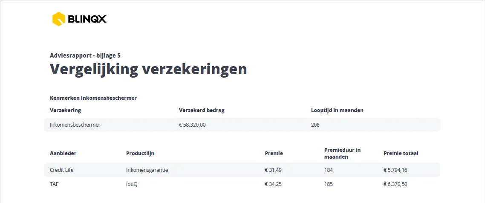
👉 IT-26899 – Aanbieders inkomensaanvullers zichtbaar in je adviesrapport
Vanaf nu worden in je adviesrapport ook de aanbieders van inkomensaanvullers getoond. Voorheen zag je alleen de verzekeraars van de ORV en woonlastenbeschermers, waardoor het overzicht niet volledig was. Daarnaast is het vergelijkend overzicht opnieuw vormgegeven, zodat het er overzichtelijker en professioneler uitziet. De optie ‘Custom’ (zelf samenstellen) is verwijderd, zodat alleen de daadwerkelijke aanbieders zichtbaar zijn. Hiermee presenteer je een vollediger en consistenter adviesrapport richting jouw klant.
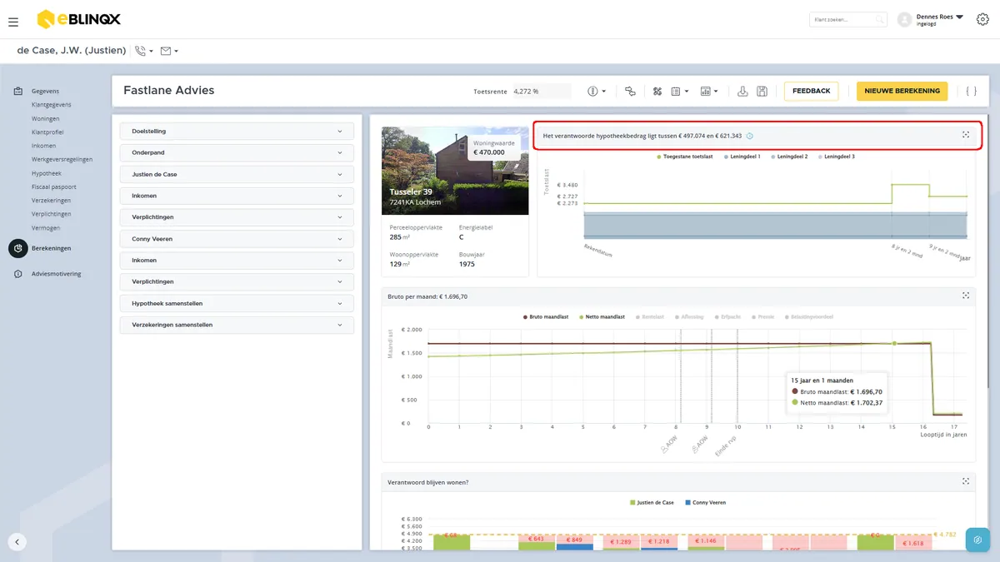
👉 IT-27772 – Nieuwe layout voor verantwoorde hypotheek 10 jaar voor AOW
De weergave van de verantwoorde hypotheek 10 jaar voor AOW is vernieuwd! Zowel in de normale versie als in de blow-up chart is de tekstindeling en styling aangepast. Dankzij de nieuwe layout ziet de informatie er overzichtelijker uit, zonder dat het onnodig veel ruimte inneemt. Zo kun jij de cijfers en toelichting sneller lezen en nog beter met je klant bespreken. Een duidelijker en strakker overzicht, zodat jij je volledig kunt focussen op het adviesgesprek.
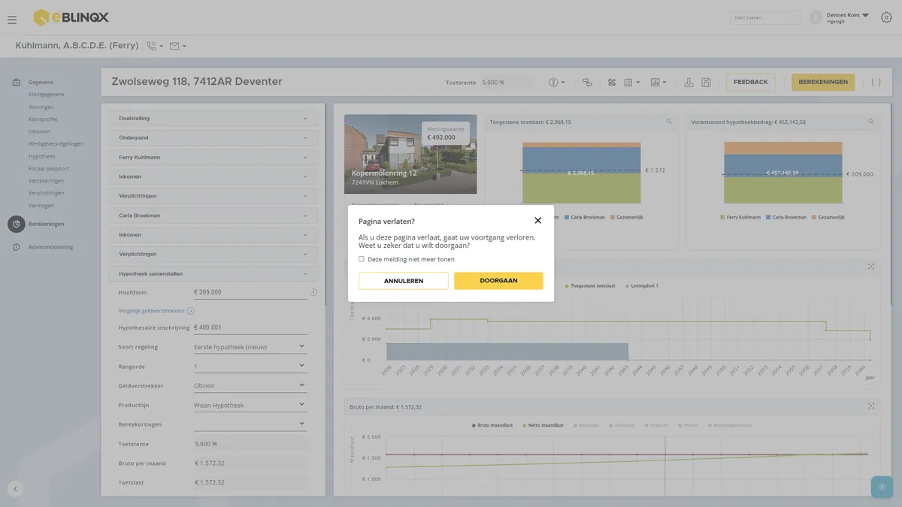
👉 IT-27726 – Verbeteringen aan het leave-calculation venster
Vanaf nu heb je meer flexibiliteit bij het gebruik van het leave-calculation venster. Waar je dit voorheen alleen kon uitschakelen, kun je het nu ook eenvoudig weer inschakelen via de instellingen. Daarnaast hebben we ervoor gezorgd dat het venster niet onterecht meer verschijnt zodra je een berekening opent zonder daarin wijzigingen te doen. Hierdoor werk je sneller en zonder onderbrekingen, terwijl je zelf de controle houdt over hoe je met het venster wilt werken. Kortom: jij bepaalt wanneer dit hulpmiddel jou ondersteunt.
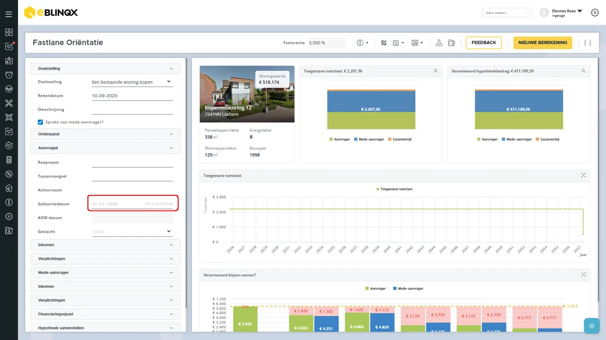
👉 IT-27731 – Onterechte melding “ongeldige geboortedatum” opgelost
Bij het invoeren van een geldige geboortedatum kreeg je soms onterecht de foutmelding “ongeldige geboortedatum”. Dit was een visuele bug die al langere tijd aanwezig was. De berekeningen, zoals de maximale hypotheek, werden hierdoor nooit beïnvloed. Het ging uitsluitend om een verwarrende melding in beeld. Vanaf nu verschijnt de melding alleen nog als je daadwerkelijk een onmogelijke geboortedatum invoert (bijvoorbeeld 31-02-2024). Voer je een geldige datum in, dan zie je geen foutmelding meer. Hiermee kun je klantgegevens invoeren zonder onterechte meldingen en werk je een stuk zorgelozer.
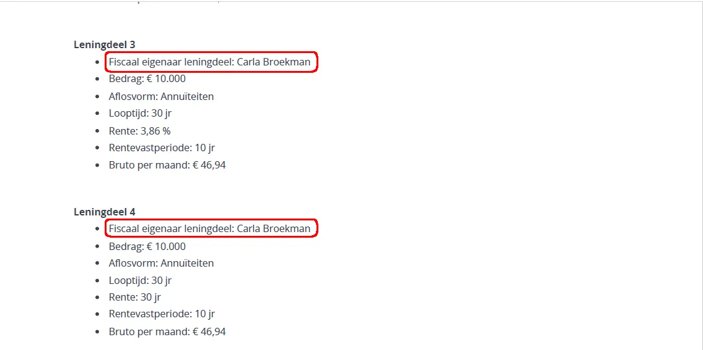
👉 IT-27743 – Dynamisch veld ‘Fiscaal eigenaar leningdeel’ beschikbaar in tekstenbibliotheek
Vanaf nu kun je in de tekstenbibliotheek gebruikmaken van een extra dynamisch veld: ‘Fiscaal eigenaar leningdeel’. Met deze uitbreiding kun je bij het opstellen van sjablonen, zoals een draagplichtovereenkomst, per leningdeel aangeven wie de fiscaal eigenaar is. Dit veld is beschikbaar voor alle 9 leningdelen die je in eBlinqx Hypotheekadvies kunt ondersteunen. Hiermee wordt het opstellen van draagplichtovereenkomsten nog completer en eenvoudiger.
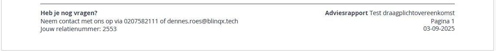
📢 IT-27336: Correcte weergave van e-mailadres in voetregel adviesrapport
Vanaf nu wordt het e-mailadres in de voetregel van het adviesrapport correct weergegeven. Voorheen kon er in sommige gevallen onterecht een extra teken (bijvoorbeeld een ‘0’) achter het e-mailadres verschijnen. Kortom: Het e-mailadres van jouw kantoor wordt altijd juist en volledig weergegeven. Rapportages ogen hierdoor professioneler en voorkomen verwarring bij de klant en je hoeft niet langer handmatig in te grijpen; de contactgegevens in de rapporten zijn automatisch correct.
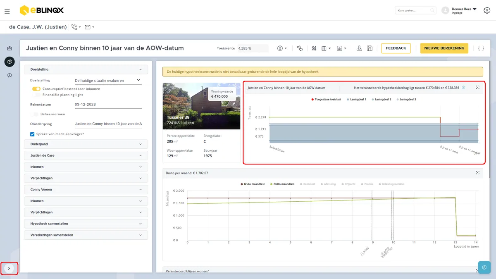
📢 IT-27686 – Grafieken schalen nu automatisch mee bij vergroten van het scherm
Vanaf nu worden de grafieken in eBlinqx Hypotheekadvies direct en scherp weergegeven wanneer je het scherm vergroot via de knop linksonder. Bij het vergroten van het scherm schaalt de volledige pagina inclusief de grafieken direct mee. Grafieken blijven altijd scherp en in de juiste verhouding zichtbaar, ongeacht de schermgrootte. Dit zorgt voor een professioneler en prettiger gebruik van de visuele weergaven in eBlinqx Hypotheekadvies.
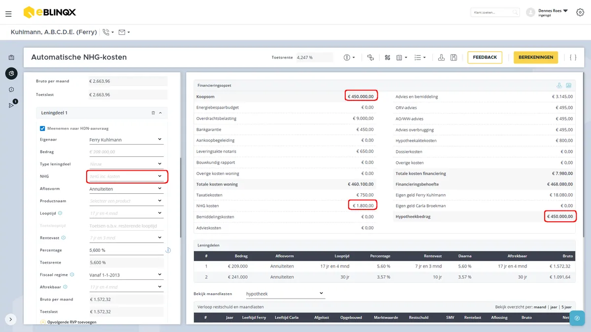
📢 IT-25418: Automatisch invullen van NHG bij aankoop bestaande woning of nieuwbouwwoning
Vanaf nu vult eBlinqx Hypotheekadvies automatisch de juiste NHG-keuze in bij leningdelen, wanneer de doelstelling is: Een bestaande woning kopen, of Een nieuwbouwwoning kopen.
Indien aan de NHG-voorwaarden wordt voldaan, wordt bij alle leningdelen standaard de optie ‘NHG incl. kosten’ ingevuld. Wanneer de koopsom of marktwaarde boven de NHG-grens uitkomt, wordt automatisch ‘Geen NHG’ geselecteerd. Voordelen voor jou als adviseur: Leningdelen worden direct correct opgenomen in de financieringsopzet. Handmatig aanpassen of corrigeren via eigen geld is niet meer nodig. Minder foutgevoelig en efficiënter adviesproces.
Komt de koopsom of marktwaarde boven de NHG-grens, dan vult eBlinqx Hypotheekadvies automatisch ‘Geen NHG’ in. Voor andere doelstellingen (bijvoorbeeld verbouwing) wordt de NHG-optie niet automatisch ingevuld – de adviseur maakt dan zelf de keuze.
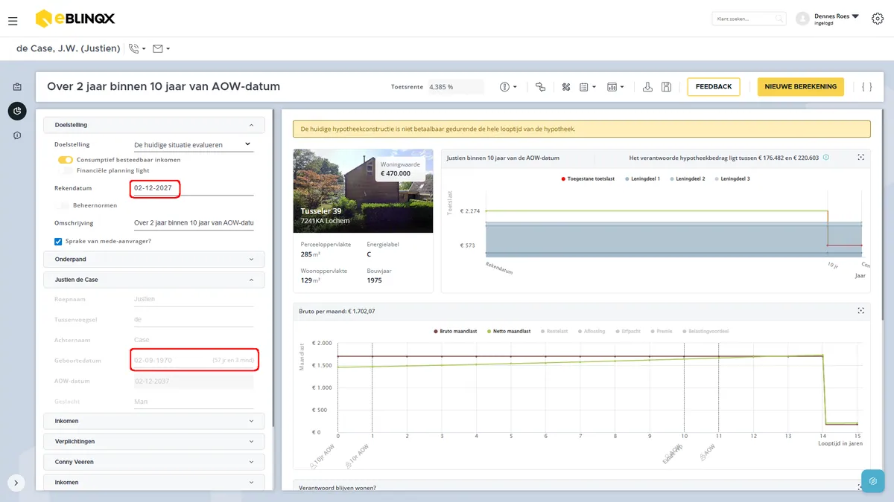
📢 IT-27723: Verbetering weergave lijndiagram bij 10 jaar voor AOW-leeftijd
Vanaf nu wordt de lijndiagram getoond zodra een klant 10 jaar of korter voor de AOW-datum zit. Voorheen werd de lijndiagram pas zichtbaar wanneer de klant al binnen die periode terechtkwam.
-
Je krijgt eerder inzicht in de ontwikkeling van het inkomen richting AOW.
-
Dit maakt het gesprek met de klant over betaalbaarheid en financiële planning overzichtelijker en accurater.
-
Minder kans op verrassingen, omdat de signalering nu gelijk vanaf de grens van 10 jaar zichtbaar is.
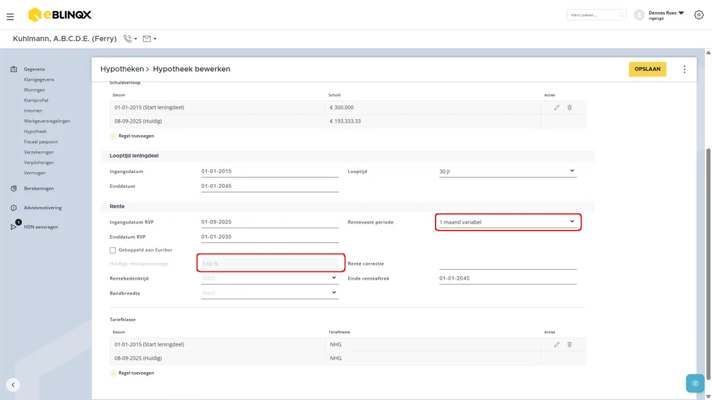
📢 IT-27414: Hypotheken met variabele rente nu ook te inventariseren en op te slaan
Vanaf nu is het mogelijk om bij de inventarisatie van een huidige hypotheek ook te kiezen voor de rentevorm “maandvariabele rente”. Wat betekent dit voor jou als adviseur?
-
Je kunt nu de werkelijke situatie van de klant volledig en correct invoeren.
-
Hypotheken met een variabele rente worden zonder foutmelding opgeslagen.
-
Deze keuze wordt voortaan correct meegenomen in zowel de rapportages als de berekeningen.
Hiermee is een belangrijke beperking weggenomen en beschik je over een vollediger beeld van de bestaande hypotheekconstructie van je klant.
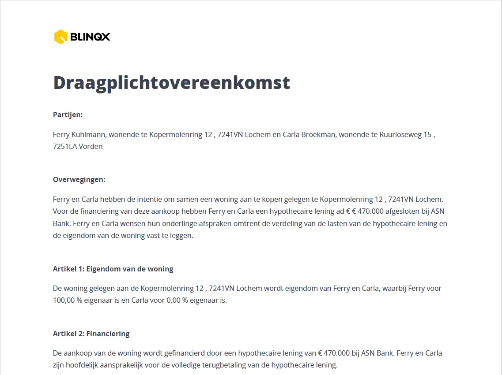
📢 IT-27529: Verbeterde weergave van motivatieteksten in rapporten
Vanaf nu worden de witregels in jouw motivatieteksten correct overgenomen in de rapport-downloads. Wanneer jij in eBlinqx Hypotheekadvies een motivatietekst invoert met witregels of enters, zie je deze voortaan exact zo terug in het rapport. De opmaak sluit daardoor naadloos aan bij wat jij zelf in eBlinqx Hypotheekadvies hebt opgesteld.
🔹 Wat betekent dit voor jou?
-
Je rapporten ogen professioneler richting de klant.
-
Je hoeft teksten niet meer handmatig aan te passen na het downloaden.
-
Jouw ingevoerde teksten worden consistent en overzichtelijk gepresenteerd.
Met deze verbetering kun jij je volledig richten op de inhoud van je advies, zonder tijd kwijt te zijn aan correcties in de vormgeving van het rapport.
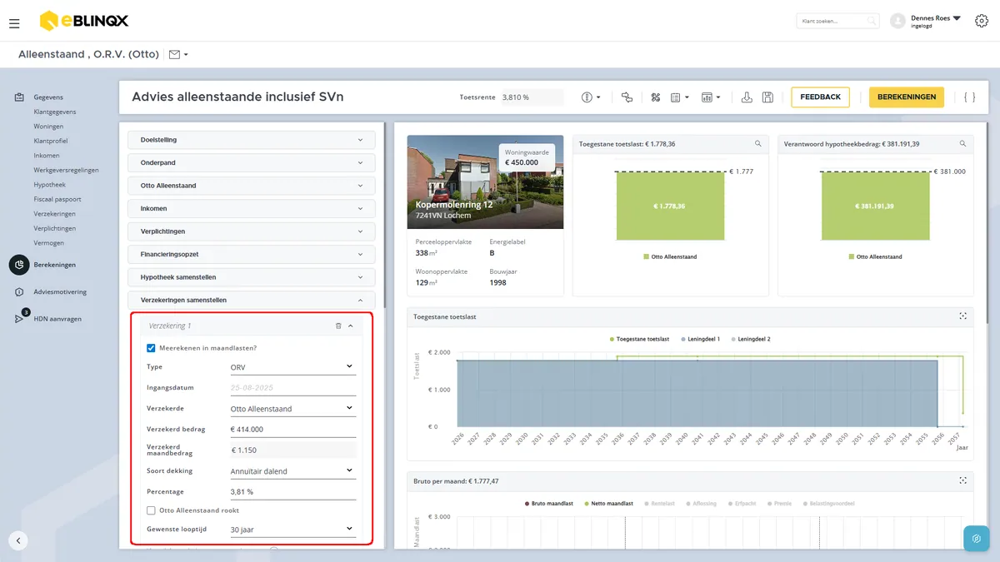
📢 IT-27378: Automatisch toevoegen ORV bij CBI-advies voor alleenstaande
Wanneer jij een advies opstelt op basis van de CBI-methodiek en het gaat om een alleenstaande, voegt eBlinqx Hypotheekadvies voortaan automatisch een overlijdensrisicoverzekering (ORV) toe aan de financieringsopzet.
-
Het verzekerd bedrag wordt gelijkgesteld aan het volledige hypotheekbedrag.
-
De dekking is annuïtair dalend.
-
Het dekkingspercentage is gebaseerd op de gewogen gemiddelde toetsrente.
-
De looptijd staat standaard op 30 jaar of tot de AOW-leeftijd (indien eerder).
-
Je hebt altijd de mogelijkheid om de ORV handmatig te wijzigen of te verwijderen.
Met deze uitbreiding zorg je eenvoudig voor een vollediger en zorgvuldiger advies richting je alleenstaande klant en voorkom je dat dit belangrijke risico over het hoofd wordt gezien.
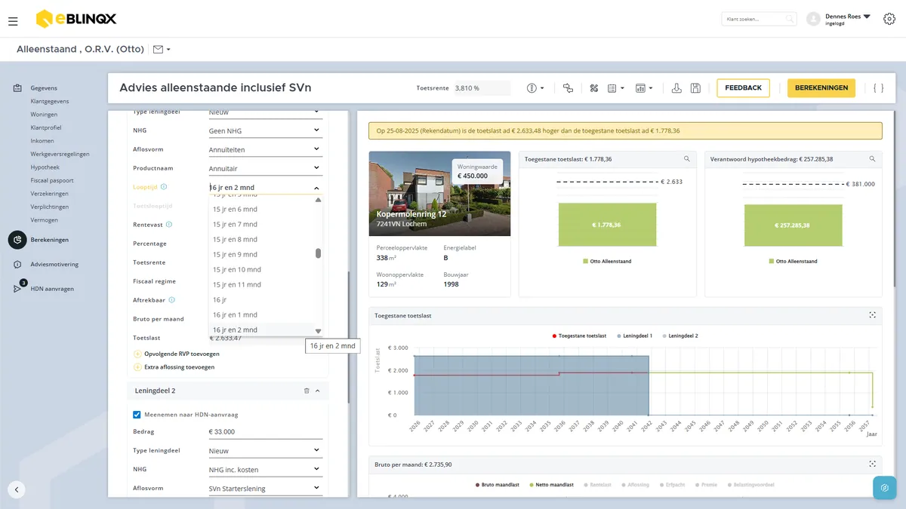
📢 IT-27687: Looptijd verlengen bij leningdelen met fiscaal regime vanaf 1-1-2013 geblokkeerd
Wanneer je in de inventarisatie een leningdeel hebt met de kwalificatie Fiscaal Regime vanaf 1-1-2013, kun je de looptijd van dit leningdeel niet langer verlengen. Inkorten van de looptijd blijft gewoon mogelijk.
Wil je de looptijd toch verlengen? Dan moet je eerst in de sidebar kiezen voor Fiscaal regime niet van toepassing. Houd er rekening mee dat de rente over dit leningdeel dan niet langer aftrekbaar is.
Zo voorkomen we dat je per ongeluk een leningdeel met fiscaal regime 1-1-2013 verlengt, terwijl dit fiscaal niet is toegestaan.
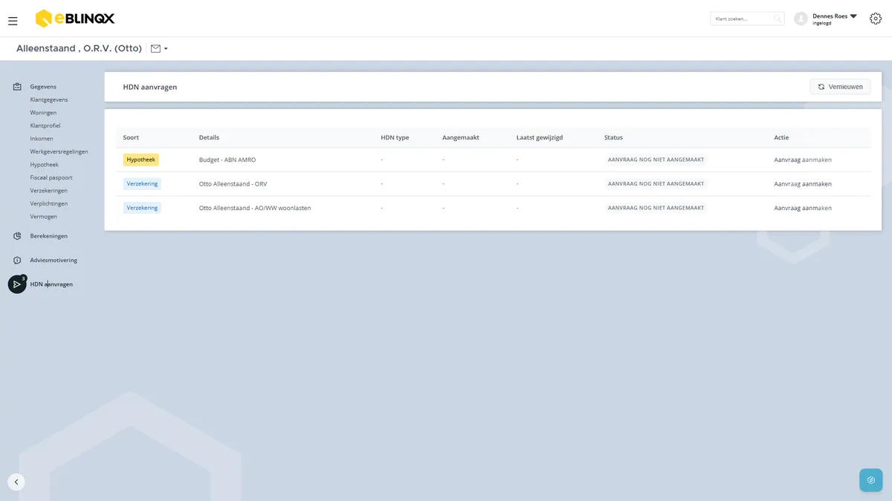
📢 IT-26997: HDN-aanvragen verhuisd naar een aparte pagina
Je vindt je HDN-aanvragen voortaan niet meer in de sidebar, maar op een eigen pagina binnen de actieve berekening.
-
Op de nieuwe HDN-pagina zie je alleen de aanvragen die bij jouw huidige berekening horen.
-
Je krijgt direct inzicht in de status: verzonden of nog openstaand.
-
Het totaaloverzicht van alle aanvragen blijft beschikbaar onder Werkvoorraad.
🔹 Wat levert dit jou op?
-
Meer rust en overzicht in je scherm.
-
Betere controle over de status van jouw HDN-aanvragen.
-
Minder kans dat je een aanvraag vergeet te verzenden.
Met deze wijziging heb je meer grip en overzicht op je HDN-aanvragen, precies op het niveau waar je ermee werkt.
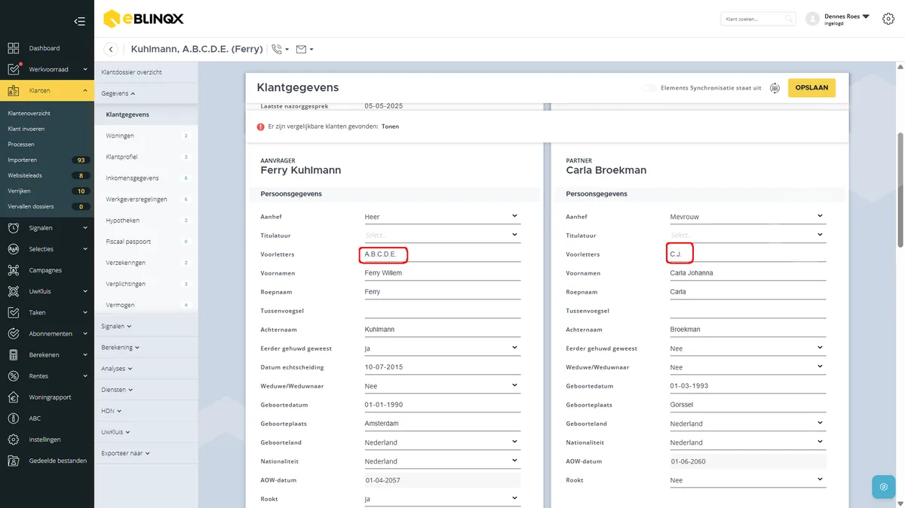
📢 IT-26816: Automatisch toevoegen van punten tussen voorletters
Vanaf nu hoef jij je geen zorgen meer te maken over de juiste schrijfwijze van voorletters. eBlinqx Hypotheekadvies voegt automatisch punten toe wanneer je deze vergeet. Hoe werkt het?
-
Bij het opslaan zet eBlinqx Hypotheekadvies automatisch punten tussen en na elke letter.
-
Voorbeeld: als je SGA invoert, wordt dit automatisch S.G.A.
-
Dit geldt voor 2 tot 5 hoofdletters zonder spaties of leestekens.
-
Als jij de voorletters al correct hebt ingevoerd (bijv. S.G.A.), blijft dit ongewijzigd.
Wat betekent dit voor jou?
-
Je hebt altijd een consistente en professionele weergave van voorletters in je dossiers en rapporten.
-
Je hoeft zelf geen extra correcties meer uit te voeren.